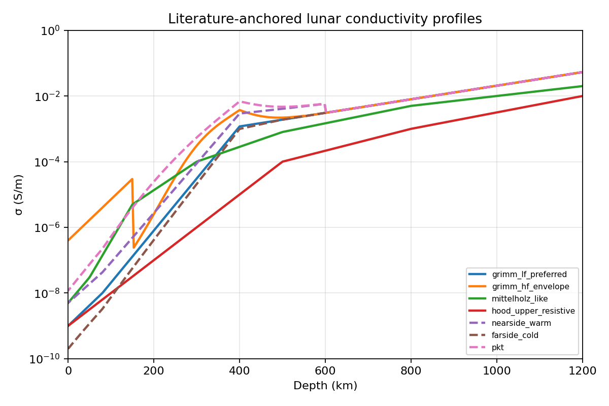
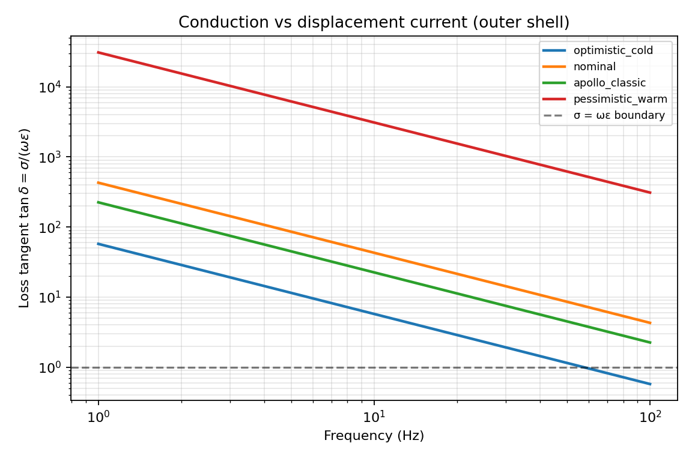
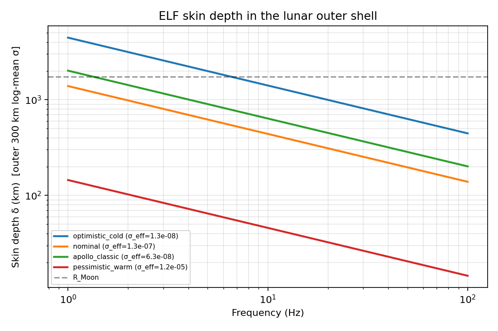
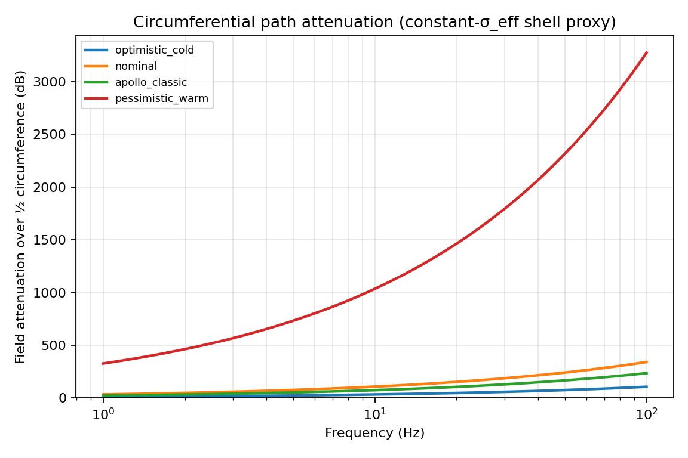
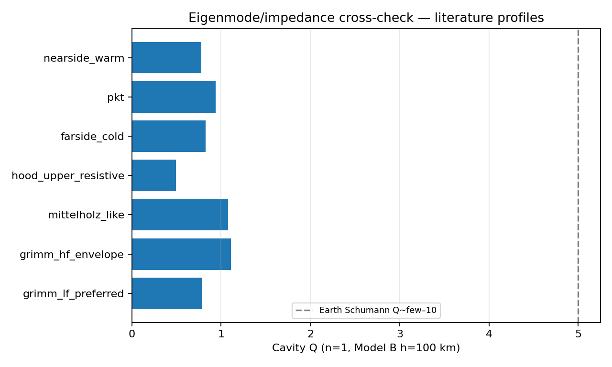
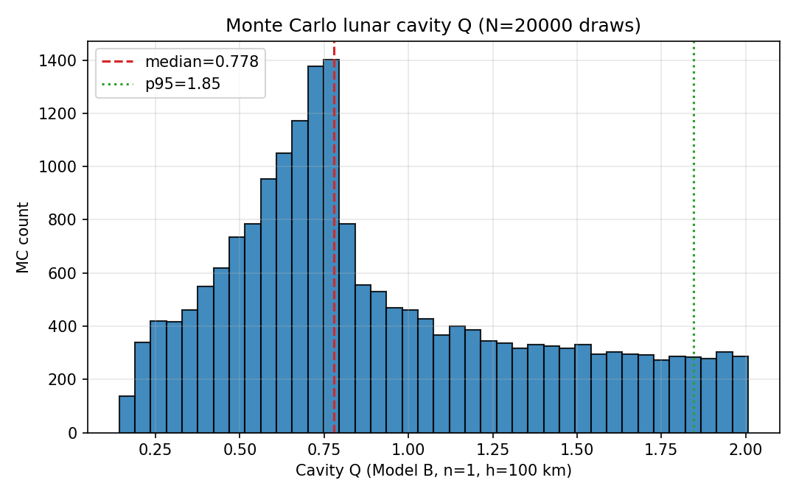
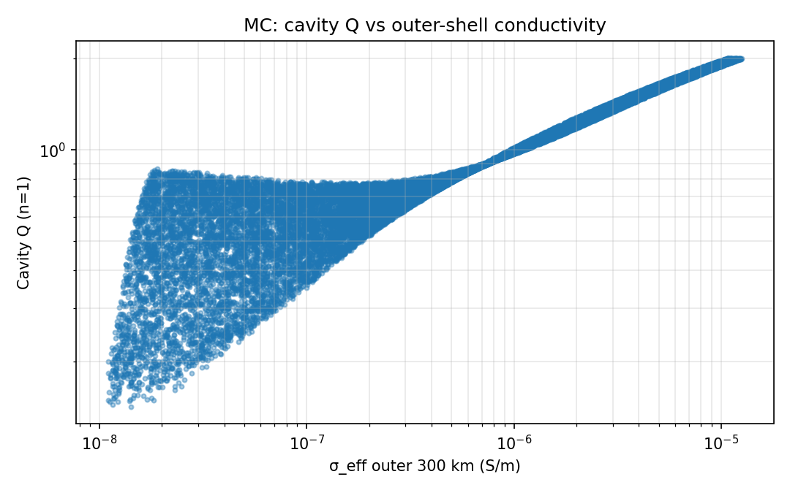
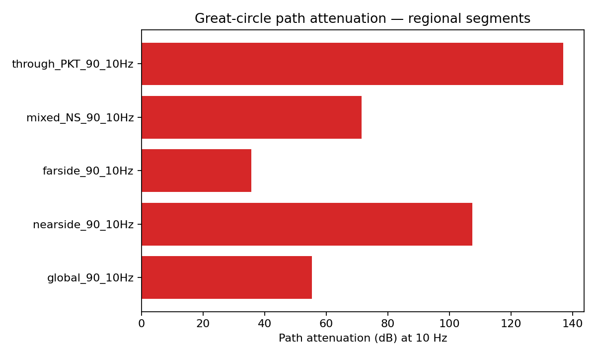
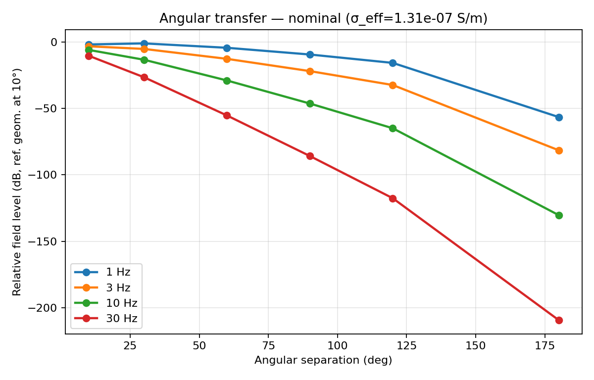

Independent Researcher
Council Bluffs, Iowa, USA
nick@perrybrandsllc.com
Abstract
We present a quantitative, observation-based assessment of electromagnetic propagation in the outer layers of the Moon at extremely low frequencies (ELF). Continuous electrical-conductivity profiles—anchored to Apollo-era and modern magnetic-sounding inversions—are used to evaluate skin depth, loss tangent, circumferential path attenuation, and global-mode quality factors. At 1–30 Hz, literature-bracketed outer-shell conductivities yield loss tangents \(\tan\delta=\sigma/(\omega\varepsilon)\gg 1\): conduction current dominates displacement current. The outer shell is therefore a weakly conducting medium with large skin depth, not a low-loss dielectric. Without a conducting ionosphere there is no closed Earth-like Schumann cavity. Even granting a hypothetical 100 km ionosphere, impedance-method cavity quality factors remain \(Q\lesssim 2\) across named profiles, and a 20 000-draw Monte Carlo over the conductivity envelope finds median \(Q\simeq 0.78\), 95th percentile \(Q\simeq 1.85\), and maximum \(Q\simeq 2.0\) (100% of draws have \(Q<5\)). Nearside–farside and Procellarum KREEP Terrane contrasts alter path attenuation but do not create a high-\(Q\) resonator. The method supplies a reproducible framework for subsurface ELF assessment on the Moon and other airless bodies.
Assessing whether a planetary interior can support low-attenuation ELF propagation is a recurring problem in planetary geophysics. The Moon is a clean test case: it lacks liquid water and a dense atmosphere, and electromagnetic sounding shows its outer layers to be highly resistive relative to terrestrial crust. Prior qualitative arguments have sometimes described the outer shell as a “low-loss dielectric.” That terminology is tested here against published conductivity structure and explicit modal quality-factor estimates.
The method is deliberately simple:
Electrical conductivity of the lunar interior is inferred from magnetic induction in time-varying external fields, using dual-spacecraft measurements from Apollo surface magnetometers and lunar orbiters (e.g., Explorer 35) and, more recently, orbital magnetometer inversions. Re-analyses confirm that conductivity is extremely low in the outer few hundred kilometers and rises smoothly with depth as temperature increases [Sonett et al., 1971; Dyal and Parkin, 1971; Mittelholz et al., 2021; Grimm, 2023].
A preferred one-dimensional construction for this study combines:
There is no sharp step-function boundary: the transition from resistive to more conductive rock is continuous. Consequently the outer shell cannot be treated as a homogeneous dielectric slab terminated by a perfect conductor.

At frequencies of a few to a few tens of hertz, the electromagnetic skin depth in the good-conductor limit,
\(\displaystyle \delta=\sqrt{\frac{2}{\omega\mu\sigma}}\,,\) (1)
remains on the order of tens to thousands of kilometers within the outer resistive region. For \(f=10\) Hz and \(\sigma=10^{-7}\) S/m with \(\mu=\mu_0\), \(\delta\approx 500\) km.
The relative magnitude of conduction to displacement current is the loss tangent
\(\displaystyle \tan\delta=\frac{\sigma}{\omega\varepsilon}\,.\) (2)
For lunar rock with \(\varepsilon_r\sim 4\)–7, \(\omega\varepsilon\) is of order \(10^{-9}\) S/m at 10 Hz. Thus for \(\sigma=10^{-7}\) S/m, \(\tan\delta\sim 30\)–50 \(\gg 1\): conduction current dominates. A true low-loss dielectric would require \(\tan\delta\ll 1\), i.e. \(\sigma\ll 10^{-9}\) S/m at 10 Hz.


Table 1 summarizes outer-shell metrics for literature constructions at 10 Hz. Half-circumference field attenuations of tens to hundreds of decibels show that shell-guided global standing waves are not viable for nominal and midmantle-resolved profiles.
| Profile | \(\sigma_{\mathrm{eff}}\) (S/m) | \(\delta\) (km) | \(\tan\delta\) | \(A_{1/2\mathrm{circ}}\) (dB) |
|---|---|---|---|---|
| Grimm LF preferred | \(1.4\times 10^{-7}\) | 429 | 45 | 111 |
| Mittelholz-like | \(1.6\times 10^{-6}\) | 125 | 530 | 379 |
| Hood-class resistive | \(3.0\times 10^{-8}\) | 917 | 9.9 | 52 |
| Grimm HF envelope | \(5.7\times 10^{-6}\) | 67 | 1850 | 710 |

Ideal closed-cavity Schumann frequencies for a sphere of lunar radius \(R\) are \(f_n=(c/2\pi R)\sqrt{n(n+1)}\), so \(f_1\approx 38.8\) Hz. The physical Moon has no dense conducting ionosphere to form the upper wall of an Earth-like cavity (Model A). Global high-\(Q\) standing waves of the classic Schumann type are therefore not supported by geometry alone.
To bound residual “would-be” cavity quality even under favorable assumptions, we adopt a hypothetical closed cavity (Model B) with a conducting ionosphere at height \(h=100\) km. Planetary surface impedance \(Z_g(\omega)\) is computed from a layered magnetotelluric-style recursion through \(\sigma(r)\); ionospheric impedance \(Z_i\) is a uniform half-space proxy. The cavity quality factor is estimated as
\(\displaystyle Q\approx\frac{\omega\mu_0 h}{2\,\mathrm{Re}(Z_g+Z_i)}\,.\) (3)
An Earth validation stack (Model C) recovers \(Q\sim 4\)–6 for the first three multipoles—order-of-magnitude agreement with terrestrial Schumann \(Q\) of a few to ten.
| Profile | \(Q\) (\(n=1\)) | \(Q\) (\(n=2\)) | \(Q\) (\(n=3\)) |
|---|---|---|---|
| Grimm LF preferred | 0.78 | 0.64 | 0.45 |
| Mittelholz-like | 1.08 | 1.08 | 0.99 |
| Hood-class resistive | 0.49 | 0.34 | 0.20 |
| Grimm HF envelope | 1.11 | 1.32 | 1.47 |
| Nearside warm | 0.78 | 0.69 | 0.57 |
| Farside cold | 0.83 | 0.66 | 0.43 |
| PKT | 0.94 | 0.93 | 0.86 |
Ringing times \(\tau\approx Q/(\pi f_1)\) are a few milliseconds for \(Q\sim 1\) at \(f_1\sim 39\) Hz—orders of magnitude too short for a sustained global ring.

To avoid reliance on a single \(\sigma(r)\), we draw 20 000 synthetic profiles with surface-to-deep conductivity hinges spanning optimistic to pessimistic literature bounds, and recompute Model B \(Q\) for \(n=1\). Results:
No high-\(Q\) island appears in the envelope.


One-dimensional inversions miss nearside–farside structure and the Procellarum KREEP Terrane. Regional column variants (warmer nearside, colder farside, PKT-boosted upper mantle) change local surface impedance and shell-path attenuation. Two equal-area hemisphere combinations yield effective cavity \(Q\sim 0.8\)–0.9—still \(\mathcal{O}(1)\). Piecewise great-circle paths at 10 Hz give \(\sim\)36 dB (farside) to \(\sim\)268 dB (PKT) of attenuation over 90°, and \(\sim\)137 dB on a mixed path through PKT. Lateral contrast modulates transmission but does not produce a high-\(Q\) global mode.


Continuous electrical-conductivity profiles derived from Apollo and orbital magnetic sounding, together with literature-bracketed envelopes and a 20 000-draw Monte Carlo experiment, show that the outer several hundred kilometers of the Moon form a weakly conducting, large-skin-depth medium at ELF—not a low-loss dielectric cavity wall. Loss tangents satisfy \(\tan\delta\gg 1\) at 1–30 Hz. The absence of a conducting ionosphere precludes a closed Schumann-type cavity; even with a hypothetical ionosphere, cavity quality factors remain \(Q\lesssim 2\) across the explored envelope. Lateral nearside–farside and PKT structure modulates path attenuation but does not enable high-\(Q\) global resonances. The same observation-based template applies to other airless bodies.
Quantitative results were produced with the open lunar-elf modeling package
(layered surface-impedance cavity \(Q\), path integrals, Monte Carlo, and regional path experiments).
Reproducibility scripts and figures are archived with the project.
P. Dyal and C. W. Parkin. The Apollo 12 magnetometer experiment: Internal lunar properties from transient and steady magnetic field measurements. Proceedings of the Second Lunar Science Conference, 3:2391–2413, 1971.
P. Dyal and C. W. Parkin. Electrical conductivity and temperature of the lunar interior from magnetic transient-response measurements. Journal of Geophysical Research, 1977 (near-surface bounds as cited by Grimm, 2023).
R. E. Grimm. Lunar mantle structure and composition inferred from Apollo 12–Explorer 35 electromagnetic sounding. arXiv:2305.01462; Icarus, 407:115775, 2024.
L. L. Hood, F. Herbert, and C. P. Sonett. The deep lunar electrical conductivity profile: Structural and thermal inferences. Journal of Geophysical Research, 87(B7):5311–5326, 1982.
A. Mittelholz et al. The global conductivity structure of the lunar upper and midmantle. Journal of Geophysical Research: Planets, 126(10):e2021JE006980, 2021.
C. P. Sonett, P. Dyal, C. W. Parkin, D. S. Colburn, J. D. Mihalov, and B. F. Smith. Whole body response of the moon to electromagnetic induction by the solar wind. Science, 172(3980):256–258, 1971.
Corresponding code and full numerical tables: Projects/lunar-elf/
(paper/QUANTITATIVE_RESULTS.md, paper/CAMPAIGN_REPORT.md, paper/OPTIONAL_REPORT.md).